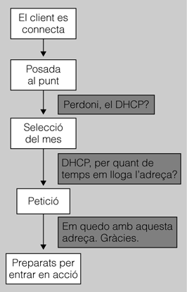

Protocols de xarxa
El terme protocol de xarxa descriu tot el programari d’un ordinador que permet que les seves aplicacions utilitzin els recursos, però no són programes que es puguin instal·lar o esborrar. Aquests programes són diferents segons el sistema operatiu que es faci servir. Poden ser fitxers de suport, com les biblioteques de vincles dinàmics (DLL, dynamic load library) en els sistemes Windows, o poden estar integrats en el nucli o com un mòdul que es pot carregar en qualsevol moment, en el cas dels sistemes GNU/Linux.
Tot i això, en adaptadors de gamma alta, certes parts dels protocols de xarxa s’implementen mitjançant microprogramari o xips dedicats per treure la càrrega que comporta aquesta feina al sistema operatiu.
Els protocols de xarxa, que se situen en la capa 3 del model OSI (figura), són els responsables de transmetre informació des d’un ordinador amfitrió (host) a un altre sense necessitat que aquests estiguin connectats directament: la informació viatja des de l’ordinador amfitrió origen fins al de destinació traspassant tants medis com calgui; per tant, també ha de ser capaç d’encaminar els paquets.
Funcions dels protocols de xarxa
En el cas que dos equips no estiguin connectats a la mateixa xarxa, cal definir un mecanisme perquè les dades es passin a uns nodes que fan d’intermediaris, anomenats encaminadors. Aquests nodes connecten dues xarxes o més i la funció principal és retransmetre dades d’una xarxa a una altra d’acord amb una ruta perquè els paquets arribin a la destinació.
1. Adreçament
La capa de xarxa ha de mantenir l’adreçament dels ordinadors amfitrions; d’una banda, per enviar dades entre ordinadors amfitrions que no estan connectats directament i, de l’altra, perquè els encaminadors estableixin la millor ruta entre els dos punts.
Per tant, cal identificar d’una manera única els ordinadors amfitrions i cal definir un sistema d’agrupar-los per afavorir que, quan els encaminadors que hi ha al mig dels dos extrems es comuniquin, siguin capaços de dirigir el trànsit eficientment.
2. Encaminament
Per passar dades entre un ordinador amfitrió i un altre cal definir un mecanisme d’encaminament perquè, cada cop que es passin les dades a l’encaminador següent, estigui més a prop del node final.
Els encaminadors són equips la funció principal dels quals és moure els paquets entre les xarxes a les quals estan connectats tenint en compte factors com la proximitat del node final o la saturació d’algun enllaç.
3. Tipus de ruta
Una altra de les funcions dels protocols de xarxa és definir una ruta entre els dos ordinadors amfitrions que s’han de comunicar. Es poden seguir dues estratègies:
- Sense connexió: sense establir cap camí en concret, cada vegada que s’enviï un datagrama es decidirà el camí que es recorrerà.
- Circuit virtual: s’estableix inicialment un camí entre els dos equips i es reserven recursos per a aquest camí. Equivaldria a passar un cable d’extrem a extrem dedicat per aquests dos ordinadors amfitrions.
IP (Internet protocol)
La versió més usada actualment del protocol IP és la IPv4, definida en l’RFC 791 del 1981. Actualment ja disposa d’un successor, la IPv6, l’ús de la qual es va estenent progressivament.
Totes les versions del protocol IP permeten l’enviament de paquets entre equips sense establir cap mena de connexió. Això vol dir que l’ordinador amfitrió origen envia dades al destinatari sense esperar cap mena de notificació que les dades s’han rebut correctament.
Avui dia, el TCP/IP és el conjunt de protocols escollit per a la immensa majoria de les xarxes actuals i, per descomptat, per a qualsevol sistema que es vulgui connectar a Internet.
Tot i que per enviar dades entre dos ordinadors amfitrions ja n’hi ha prou amb el protocol IP, no ofereix cap mena de garantia que s’enviïn correctament les dades o, ni tan sols, que arribin a la destinació. De fet, no ens garanteix que les dades, si arriben a la destinació, estiguin intactes, ja que el control d’errors només es fa sobre les capçaleres, no sobre les dades que transmet. Així doncs, tot i que es pot fer servir IP directament, per a aplicacions que requereixen fiabilitat fan servir al protocol de la capa de transport TCP.
1. Adreçament IP
Una de les funcions principals dels protocols de xarxa és proveir d’adreçament els elements perquè puguin enviar-se dades entre si. Entre el protocol IPv4 i el protocol IPv6 canvia la longitud i la representació de la direcció completament.
2. Tipus d’adreçament
En l’RFC 1918 del 1996 es defineixen els conjunts sobre el total d’adreces IPv4 que es destinen a la creació de xarxes privades, com pot ser la xarxa interna d’una empresa que no necessita que es pugui accedir als equips directament des d’Internet. Els rangs definits com a privats són els següents:
- El bloc que va de la IP
10.0.0.0a la10.255.255.255 - El bloc que va de la IP
172.16.0.0a la172.31.255.255 - El bloc que va de la IP
192.168.0.0a la192.168.255.255
En l’RFC 3330 del 2002 es va definir un altre rang que es pot considerar privat i que s’anomena d’autoconfiguració (o d’enllaç local). Aquest rang va de la IP 169.254.0.0 a la 169.254.255.255. S’anomena d’autoconfiguració perquè, en cas que un equip que es vulgui connectar a la xarxa sol·licitant una IP mitjançant el protocol DHCP no obtingui resposta, s’autoassigna una IP aleatòria dintre d’aquest rang per obtenir un accés mínim a la xarxa.
Les adreces privades només són visibles dins les xarxes locals on són definides. Per tant, a Internet pot haver-hi adreces privades que apareguin a més d’una xarxa local, ja que, en no veure’s entre elles, no s’interfereixen. NAT permet que aquests ordinadors amb adreces privades puguin utilitzar l’adreça pública de l’encaminador per accedir a Internet.
Les adreces públiques, per contra, es veuen a tot Internet i no pot haver-hi dues màquines amb la mateixa adreça IP.
Podeu consultar què és el NAT a l’apartat “Adreçament públic i privat: NAT”.
3. La necessitat de la IPv6
La IP v4 consta de quatre octets (és a dir, 32 bits) que es representen separats per punts en decimal; per exemple, una adreça vàlida pot ser 1.2.3.4.
Això dóna un total de 232 adreces vàlides, o el que és el mateix, 4.294.967.296 adreces possibles. Amb la gran expansió d’Internet ha esdevingut un problema, ja que el nombre d’adreces assignades respecte al total d’adreces possibles és cada vegada més alt. Per això s’han desenvolupat tècniques com el NAT, per permetre que sistemes amb adreçament privat es puguin comunicar amb sistemes amb adreçament públic.
Amb la idea de permetre que qualsevol dispositiu pugui tenir una adreça IP única, es va desenvolupar la IPv6: es va passar dels 32 bits de la IPv4 als 128 de la nova versió. Això dóna un total de 2128, és a dir, 3,4·1038 adreces IP. Dit d’una manera més entenedora, cada persona del planeta pot tenir uns quants milions d’adreces IPv6.
La representació de les adreces IPv6 és sensiblement diferent: es representen en hexadecimal en conjunts de 16 bits separats per dos punts. Per exemple, una adreça IPv6 vàlida pot ser: 2001:0123:4567:89ab:cdef:dead:beef:0001
L'ICMP
L’ICMP és un protocol de la capa de xarxa que complementa el protocol IP per a tasques de control i notificació d’errors. Està definit en l’RFC 792 com a complement imprescindible del protocol IP.
Malgrat que aquest protocol no està concebut perquè hi hagi aplicacions que el facin servir, n’hi ha algunes com ping i traceroute que l’utilitzen, principalment com a eines de diagnostic de la xarxa.
L'ordre ping
Mitjançant l’ordre ping es pot comprovar si hi ha connectivitat entre dos equips diferents mitjançant paquets ICMP. L’ordinador amfitrió que executa l’ordre ping envia una petició d’eco (echo request) i l’equip que la rep ha de contestar amb una resposta d’eco (echo reply). Sovint s’utilitza el temps que es tarda des que s’envia la petició fins que es rep la resposta per mesurar latències de xarxa, per això algunes vegades el terme ping es pot referir a aquest retard.
L'ordre traceroute
L’ordre traceroute és una eina que ens permet, dintre d’unes certes limitacions, descobrir la ruta que segueix un paquet IP des de l’equip origen fins al de destinació. Per fer-ho s’utilitza el camp TTL dels paquets IP, el qual indica el nombre de salts que li resten abans que es descarti el paquet.
Si s’envia un paquet amb un TTL d’1, el primer encaminador descartarà el paquet i enviarà un paquet ICMP de tipus temps esgotat (time exceeded) a l’ordinador amfitrió que ha originat el primer paquet. Aquest paquet de temps esgotat conté l’adreça IP de l’encaminador que ha descartat el paquet inicial. Així s’obté l’adreça IP del primer encaminador. Si es repeteix l’operació amb un 2 obtindrem el següent, i així successivament.
A continuació podem veure la sortida de l’execució de l’ordre traceroute:
# traceroute systemadmin.es traceroute to systemadmin.es (91.121.113.59), 30 hops max, 40 byte packets 1 82.98.141.253 (82.98.141.253) 1.935 ms 2.245 ms 2.491 ms 2 10.1.1.1 (10.1.1.1) 0.324 ms 0.367 ms 0.419 ms 3 193.149.1.81 (193.149.1.81) 4.406 ms * * 4 * * * 5 160g.rbx-2-6k.routers.chtix.eu (213.186.32.222) 22.144 ms * * 6 rbx-36-m1.routers.chtix.eu (213.251.191.231) 20.266 ms 20.257 ms 20.460 ms 7 mail.systemadmin.es (91.121.113.59) 20.042 ms 19.878 ms 19.848 ms
Tot i això, alguns encaminadors poden no enviar aquest missatge ICMP i només descartar el paquet; per tant, si no s’ha rebut la resposta en un cert temps es marca l’encaminador amb un asterisc, com en el salt 4 de l’exemple anterior.
De totes maneres, és possible que hi hagi encaminadors que no puguem descobrir perquè no modifiquen el TTL del paquet i, per tant, les dades passen silenciosament a través seu.
ARP
El protocol ARP s’encarrega de resoldre l’adreça de la capa d’enllaç a partir de l’adreça de la capa de xarxa tal com està definit en l’RFC 826 del 1982. En el cas típic ens trobaríem amb una xarxa IP sobre una xarxa Ethernet i, per tant, el protocol ARP ens resoldria l’adreça MAC a partir de l’adreça IP.
Per fer això, la màquina que vol saber l’adreça MAC que té una certa IP envia un paquet de tipus petició ARP (ARP request) a l’adreça de difusió de la capa d’enllaç i espera que la màquina que té la IP o qualsevol altra li respongui mitjançant un paquet de resposta ARP (ARP response).
Un cop obtinguda la resposta, s’emmagatzema, durant un cert temps, en una taula local de cada sistema: això evita que cada vegada que es vulgui enviar un paquet s’hagi de tornar a demanar la mateixa informació. Aquesta taula ARP s’esborra periòdicament per evitar que si una IP s’assigna a un altre equip els paquets es continuïn enviant a l’equip antic.
Adreça MAC de difusió
Hi ha un tipus d’adreça MAC especial que tots els dispositius d’una xarxa LAN utilitzen per comunicar-se d’una manera simultània. Aquesta adreça s’anomena adreça de difusió i es representa FF-FF-FF-FF-FF-FF.
Assignació estàtica
Quan les adreces IP s’assignen estàticament, cadascun dels dispositius s’ha de configurar amb una única adreça IP. De fet, aquest mètode requereix guardar registres de les assignacions d’adreces, atès que podrien aparèixer problemes dins d’una xarxa en cas d’utilitzar adreces IP duplicades.
Des del punt de vista de la xarxa, hi ha diversos dispositius que han de tenir assignada d’una manera permanent (o estàtica) una adreça IP, ja que alguns dispositius hi han de fer referència. En cas que dispositius com impressores en xarxa, servidors d’aplicacions o encaminadors no disposin d’una adreça IP estàtica, la xarxa s’ha de configurar de nou en tot moment. En poques paraules, si es donés aquesta situació, la xarxa esdevindria inútil.
L’assignació estàtica d’adreces IP té l’inconvenient que pot comportar problemes de seguretat, ja que pot esdevenir una porta d’accés important per als pirates informàtics. Cal destacar que poden passar dies o setmanes fins que no es detecta que els pirates han accedit a les dades contingudes en l’ordinador.
Per a un dispositiu de referència, una alternativa a l’ús d’una adreça estàtica és assignar dinàmicament un nom a la seva adreça. Així es pot accedir el dispositiu fent referència al nom que li hem assignat (que no varia), en lloc de fer-ho a l’adreça IP (que pot variar si és dinàmica). DDNS (DNS dinàmic) és un protocol que permet fer aquesta mena d’assignacions dinàmiques de noms a adreces IP.
Assignació dinàmica
- 
- Esquema d'assignació dinàmica d'adreces
Podeu consultar el referent a DDNS (DNS dinàmic) a l’apartat“DDNS (dynamic DNS)”.
Tenint en compte que dins d’una xarxa hi ha un ventall d’adreces que ja estan assignades, la resta s’han d’assignar, per exemple, a les màquines que s’hi connectin. Amb tot, depenent de les dimensions de la xarxa, el nombre d’adreces disponibles pot ser limitat. Per això es va trobar el mètode d’assignació dinàmica d’adreces IP, perquè es connectin intermitentment a la xarxa. Aquest servei d’atorgament de les adreces IP que, en el moment de la connexió, estiguin lliures permet evitar la feina de configuració a l’administrador de la xarxa.
Per a l’assignació dinàmica de les adreces IP es van crear serveis com el DHCP o el BOOTP.
Protocol de resolució d'adreces invers (RARP)
El protocol RARP serveix perquè les màquines que no tenen una adreça IP la puguin obtenir.
El funcionament és el següent: quan una màquina es connecta a la xarxa i no té adreça, envia un missatge de difusió per demanar-ne una. Aquest missatge només és respost pel servidor RARP amb un nou paquet de difusió que conté l’adreça IP que caldrà assignar a la màquina sol·licitant.
Totes les màquines ignoraran el paquet excepte la màquina que hem connectat, que entendrà que el missatge és per a ella i se’l quedarà. En el moment en què la nova màquina accepti el paquet enviat pel servidor RARP, l’examinarà i n’extraurà l’adreça IP. En aquest moment, la nova màquina ja tindrà la seva pròpia adreça IP i, per tant, ja podrà començar a transmetre dades (figura).
Cal destacar que el missatge RARP que envia l’ordinador que acabem de connectar el rebran totes les màquines, atès que no sap quin és el servidor RARP, l’examinaran i, en veure que es tracta d’una petició d’adreça IP (és a dir, un paquet que no és per a ells), l’ignoraran. Solament el servidor RARP entendrà que el paquet està adreçat a ell.
Servei DHCP
Davant la limitació del nombre d’adreces presents dins una xarxa, i el creixement exponencial que presenta, es va optar per estalviar adreces en ordinadors que es connecten intermitentment. Per fer-ho, es va crear un servei que proporcionés adreces IP que, en el moment de la connexió, estiguessin lliures. Per tant, el servei DHCP es fonamenta en el servidor DHCP que dóna adreces (a partir d’un interval d’adreces que té) als ordinadors que es connecten a la xarxa.
Un cop rebut el missatge RARP, el servidor enviarà un paquet en modalitat de difusió (broadcast) amb la informació necessària perquè la nova màquina pugui fer la transmissió corresponent. En aquest cas, el paquet arribarà novament a totes les màquines, que examinaran el paquet rebut, comprovaran que no és per a elles i l’ignoraran.
Com ja hem comentat, totes les màquines ignoraran el paquet excepte la màquina que hem connectat, que entendrà que el missatge és per a ella i se’l quedarà. Un cop la nostra màquina hagi acceptat el paquet enviat pel servidor RARP, l’examinarà i n’extraurà l’adreça IP. De fet, com que la nova màquina ja tindrà la seva pròpia adreça IP, ja podrà començar a transmetre dades (figura).
El servidor RARP té configurada una llista de parells d’adreça MAC-adreça IP a assignar. D’aquesta manera sempre assigna la mateixa adreça IP a la mateixa màquina.
RARP ha deixat d’utilitzar-se. Ha estat substituït per BOOTP i, sobretot, per DHCP, que tenen més prestacions.
IPX
El protocol d’intercanvi de paquets entre xarxes (IPX, Internetwork packet exchange) és un protocol de datagrames ràpid no orientat a connexió que s’encarrega de transmetre dades per la xarxa posant a cada paquet l’adreça de la destinació.
els protocols BOOTP i DHCP es veuen a l’apartat “Assignació automàtica d’adreces IP: BOOTP i DHCP”.
És un protocol de datagrames que s’assembla (tot i que més simple i amb menys fiabilitat) al protocol IP pel que fa a les operacions bàsiques, però diferent quant al sistema d’adreçament, al format de paquets i a l’àmbit general. És un protocol que actualment ja no s’usa i que només es troba en jocs antics per jugar en xarxa.
Datagrama
És un fragment de paquet que s’envia amb prou informació perquè la xarxa pugui encaminar-lo cap a la destinació; no es garanteix que hi arribin tots i tampoc que hi arribin en l’ordre correcte.
Adreçament IPX
L’adreçament IPX utilitza adreces de 32 bits que s’assignen completament sobre una xarxa, en comptes de fer-ho sobre un equip individual. Per identificar cada equip, s’utilitza maquinari específic.
Cada adreça té tres components:
- Adreça de xarxa, valor de 32 bits assignat per un administrador i limitat a una xarxa determinada.
- Número de node, derivat d’una adreça MAC (48 bits) que s’obté de la targeta de xarxa.
- Número de sòcol, valor de 16 bits assignat pel sistema operatiu de xarxa (NetWare) a un procés concret dins d’un node.
Un node dins d’una xarxa es representarà de la manera següent:
Adreça de xarxa + número de node
Mentre que un procés dins de la xarxa es representarà d’aquesta manera:
Número de connexió + número de sòcol
Al model OSI, la gestió del procés i el número de sòcol correspon a la capa de transport.
Al conjunt de protocols TCP/IP, aquesta gestió la fan els protocols TCP i UDP.